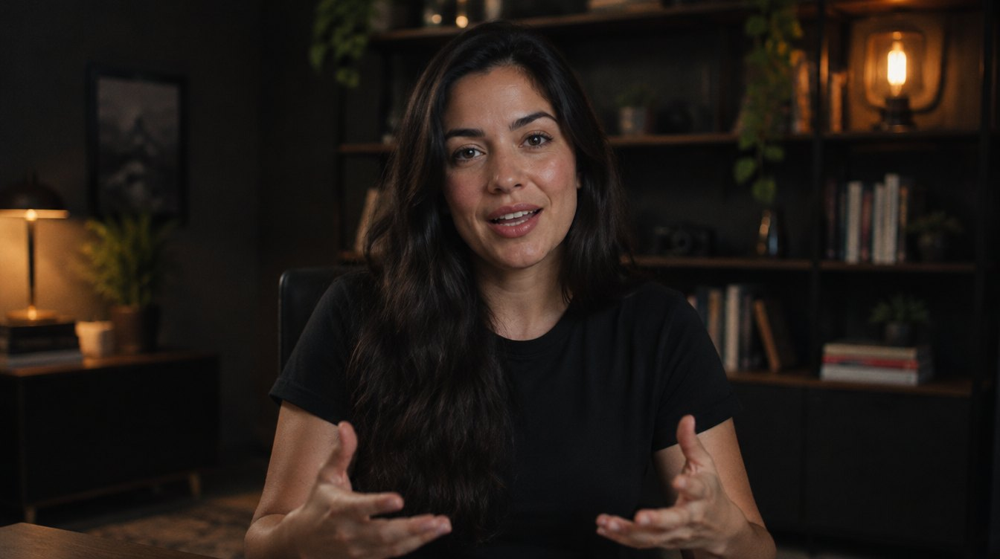
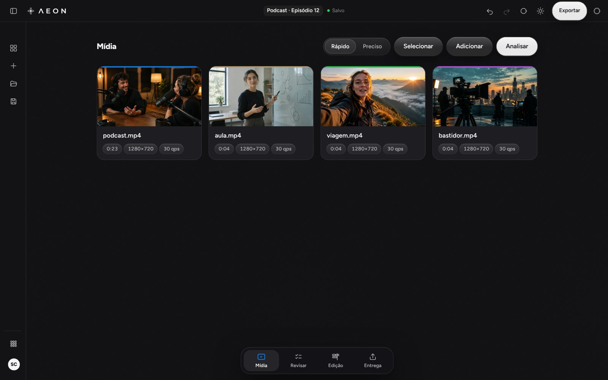
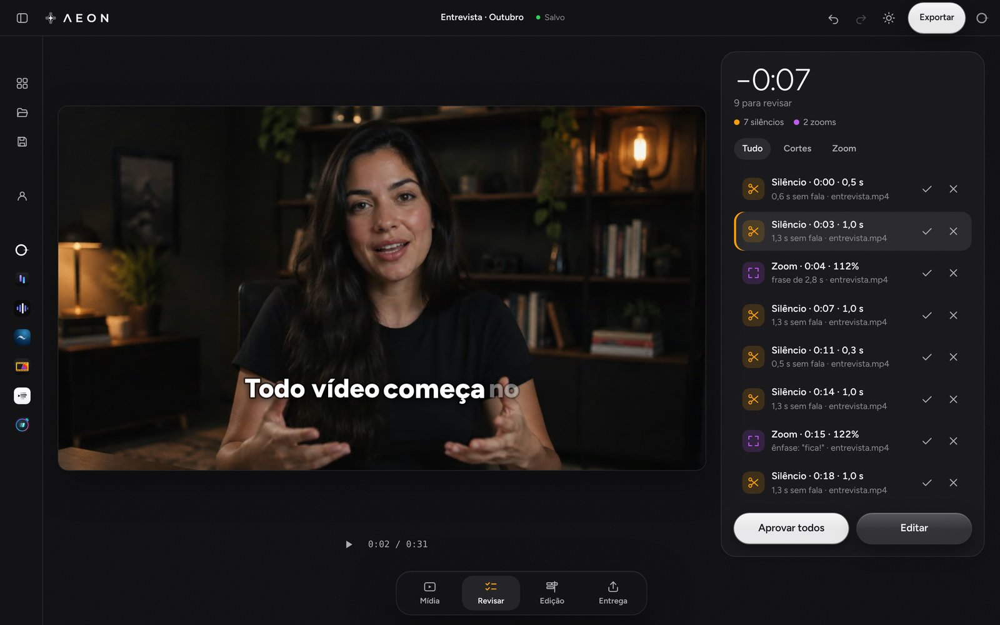
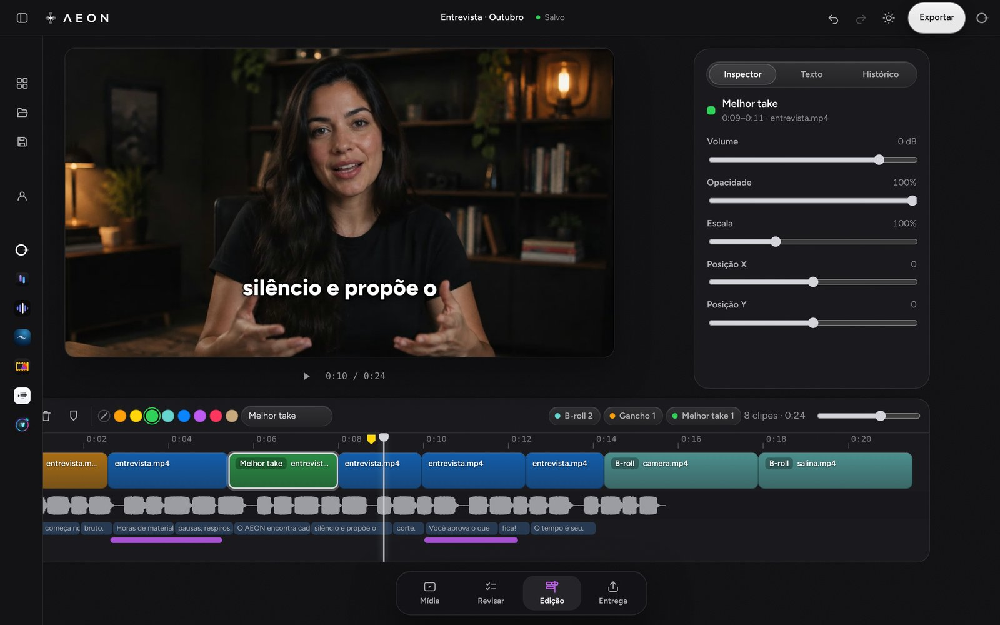
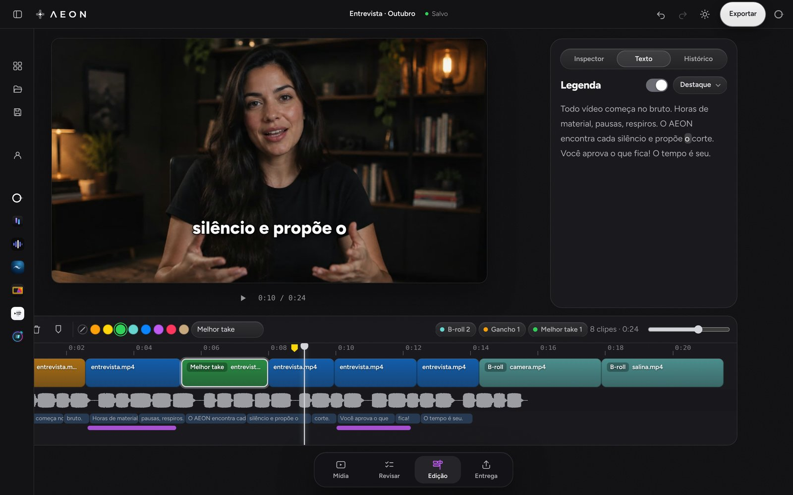
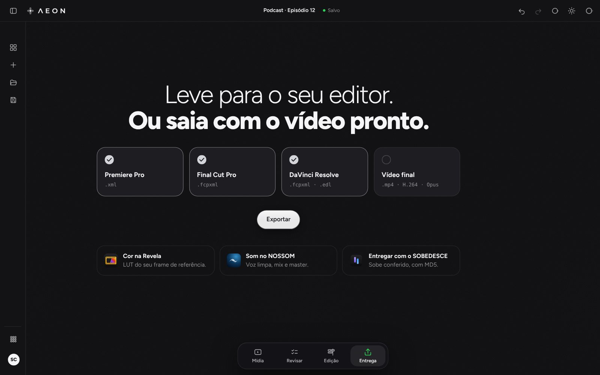
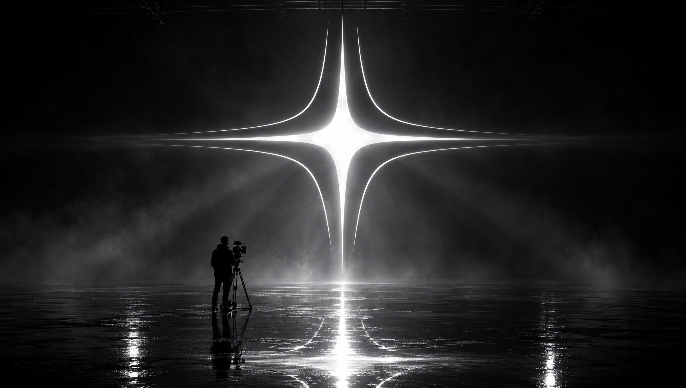

Time is yours.
Teste ao vivo
Mexa à vontade. É só uma prévia.
Um vídeo de exemplo, rodando aqui no navegador.

Tire as pausas.
Escolha o estilo.
Os mesmos estilos do app. A transcrição roda no seu computador.
Aproxime na fala.
Entra nas frases de ênfase e nunca em cima de um corte.
Leve para onde quiser.
- 3editores profissionaisPremiere, Final Cut e DaVinci
- 4formatos de timelineFCPXML, XML, OTIO e EDL
- 0arquivos enviadosA mídia não sai do computador
De editor para editor
Você conhece essa madrugada.
-
Cortar respiro por respiro, clipe por clipe.
O AEON marca todos. Você aprova de uma vez.
-
Digitar a legenda palavra por palavra.
A transcrição sai na sua máquina. Você só corrige.
-
O cliente pediu ajuste. Refazer do zero.
Desfazer, histórico e salvamento sozinho.
Por dentro
Do bruto à entrega.
Edição completa na linha do tempo. A IA ajuda quando você quiser.





Recursos
Corta o tempo. Não o seu estilo.
Silêncio e respiro
Em lote, nunca no meio da palavra.
Zoom na fala
Punch-in nas frases de ênfase.
Edição completa
Corte, apare, mova, cores e etiquetas.
Premiere, Final Cut, DaVinci
Cores e marcadores vão junto.
Salva sozinho
Histórico de cada passo.
Fica com você
Nada é enviado, movido ou apagado.

Edite além do tempo.
Ecossistema
Uma conta. Todo o caminho.
Do cartão à entrega, o AEON trabalha junto com as outras ferramentas, na mesma conta.
O AEON é para você se
- Edita vídeo falado: entrevista, aula, Reels, YouTube.
- Termina no Premiere, no Final Cut, no DaVinci, ou quer o vídeo pronto.
- Quer a mídia no seu computador, sem enviar nada.
Para o resto, o ecossistema


Chegando ao AEON
Z. Uma IA para todo o ecossistema.
No painel inicial do app, quando ele abrir. Ela conversa e lê sua conta; a edição é sua.
- Mesma conta
- Conversas reunidas
- Você confere antes
- 1 crédito por resposta
Em desenvolvimento
Chegando ao seu computador.
Mac e Windows, com a sua conta Absolute ZRO.
Ainda sem download
Perguntas
Antes de você perguntar.
Está em desenvolvimento, ainda sem data. Chega com a sua conta Absolute ZRO, no Mac, no Windows e no navegador.
Não. Dá para editar do começo ao fim sem ela. Quando você pede, ela marca pausas, sugere zoom e transcreve a legenda, e nada entra sem você aprovar.
Não. O AEON lê os arquivos no lugar e a transcrição roda na sua máquina. Nada é enviado, movido ou apagado.
Leva a timeline para o Premiere Pro (.xml), o Final Cut Pro (.fcpxml) e o DaVinci Resolve (.fcpxml e .edl), com cores e marcadores. Ou saia com o vídeo pronto (.mp4).
Para entrar com a conta. O modelo de transcrição baixa uma vez e depois funciona sem internet.
É uma prévia com um vídeo de exemplo, rodando no navegador. Mostra como o AEON corta, legenda, aproxima e entrega. Não envia nem grava nada.
O futuro começa do zero.
Em desenvolvimento. Chega com a sua conta Absolute ZRO.